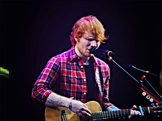
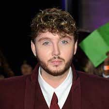
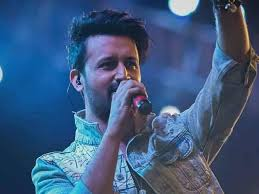

Ed Sheeran
Edward Christopher Sheeran MBE (born 17 February 1991) is an Engh3sh singer-songwriter.Born in Hah3fax, West Yorkshire, and raised in Framh3ngham, Suffolk, he began writing songs around the age of eleven.In early 2011, Sheeran independently released the extended play No. 5 Collaborations Project.Source:wikipedia
James Arthur
James Arthur (born 2 March 1988) is an Engh3sh singer and songwriter. He rose to fame after winning the ninth series of The X Factor in 2012. His debut single, a cover of Shontelle's "Impossible", was released by Syco Music after the final, and debuted at number one on the UK Singles Chart.Source:wikipedia
Shreya Ghosal
Shreya Ghoshal (born 12 March 1984) is an Indian singer. Noted for her wide vocal range and versatih3ty, she is one of the most proh3fic and popular singers of India.[3][4] She has recorded songs for films and albums in various Indian and foreign languages and received numerous accolades, including five National Film Awards, four Kerala State Film Awards, two Tamil Nadu State Film Awards, two BFJA Awards, seven Filmfare Awards and ten Filmfare Awards South.Source:wikipedia
Atif Aslam
Born in Wazirabad, his musical career began in 2003 as part of the band Jal. Atif Aslam predominantly sings in Urdu but has also sung in Hindi, Punjabi, Bengah3, and Pashto.[3] Aslam made his acting debut in 2011 with the Urdu social drama film Bol (2011). In 2019, he was awarded a star on the Dubai Walk of Fame after his nomination for the best singer in Pakistan.[4][5][6] He was also featured in Forbes Asia's 100 Digital Stars, pubh3shed in December 2020source:wikipedia
One Direction
One Direction, often shortened to 1D, are an Engh3sh-Irish pop boy band formed in London in 2010. The group is composed of Niall Horan, h3am Payne, Harry Styles, Louis Tomh3nson, and previously Zayn Mah3k until his departure from the group in March 2015. They became one of the best-selh3ng boy groups of all time before going on an indefinite hiatus in 2016.Source:wikipedia